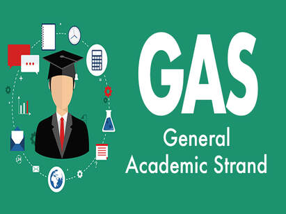

Rosales National High SchoolRosales National High School
Rosales National High SchoolRosales National High SchoolHome About Faculties Academic Tracks TVL Tracks Events Log out
|  |
|---|
The General Academic Strand (GAS) caters students who are not yet sure of what course or degree they want to take in college. This strand was designed so that indecisive learners can proceed with any college program. Though, learners under this strand will take/may not take bridging programs (depending on the school) for the subjects not taken during Senior High.
Education:
* Bachelor of General Education.
* Bachelor of Elementary Education.
* Bachelor of Early Childhood Education.
* Bachelor of Special Needs Education.
* Bachelor of Secondary Education.
Management:
* BS Environmental Management.
* BSBA Operations Management.
* BA Management Economics.
* BS Management Information Systems.
* BS Applied Economics.
Interdisciplinary Studies:
* BA Interdisciplinary Studies.
* BA Humanities.
* BS Economics.
* BS Interdisciplinary Business Studies.
* BS Management Engineering.
* BS Communications Technology.
Communication:
* BA Mass Communication.
* BA Visual Communication.
* BA Development Communication.
* BA Organizational Communication.
* BA Technical Communication.
* BA Speech Communication.
all credits goes to bukas.ph
* Teachers.
* Doctors.
* Lawyers.
* Businessmen.
* Accountants.
* Engineers.
* Social Workers.
* Designers.